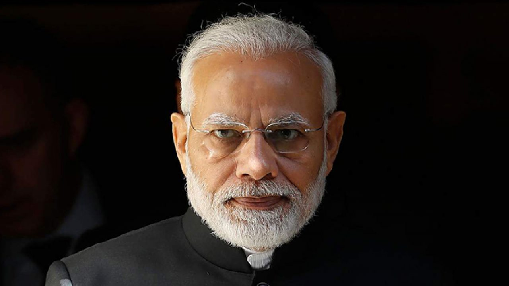

Narendra Modi: The Prime Minister Of India
Narendra Modi 14th Prime Minister of India Assumed Office on 26th May 2014

QUICK FACTS
- NAME- Narendra Modi.
- OCCUPATION- Prime Minister, Politician
- BIRTH DATE- September 17, 1950 (age 66)
- EDUCATION - Gujarat University, Delhi University
- PLACE OF BIRTH- Vadnagar, India
- FULL NAME- Narendra Damodardas Modi
- ZODIAC SIGN- Virgo
Synopsis
Narendra Modi grew up in the town of Vadnagar in India, the son of a street merchant. He entered politics as a youth and quickly rose through the ranks of Rashtriya Swayamsevak Sangh, a Hindu nationalist political party. Modi later joined the mainstream Bharatiya Janata Party in 1987, eventually becoming national secretary. In 2002, he was alleged to be responsible for the deaths of more than 1,000 Muslims during civil unrest but was later exonerated. In 2014 he was elected prime minister of India.
Background
Narendra Modi was born in the small town of Vadnagar, in northern Gujarat, India. His father was a street merchant who struggled to support the family. Young Narendra and his brother sold tea near a bus terminal to help out. Though an average student in school, Modi spent hours in the library and was known as a strong debater. In his early teens, he joined Akhil Bharatiya Vidyarthi Parishad, the student wing of Rashtriya Swayamsevak Sangh (RSS), a Hindu nationalist political party.
Life Dedicated to Politics
Modi had an arranged married at 18 but spent little time with his bride. The two eventually separated, with Modi claiming to be single for some time. He dedicated his life to politics in Gujarat, joining the RSS in 1971. During the 1975-77 political crisis, Prime Minister Indira Gandhi declared a state of emergency, banning political organizations such as the RSS. Modi went underground and wrote a book, Sangharsh ma Gujarat (Gujarat in Emergency), which chronicles his experiences as a political fugitive. In 1978, Modi graduated from Delhi University with a degree in political science and completed his master’s work at Gujarat University in 1983.
In 1987, Narendra Modi joined the Bharatiya Janata Party (BJP), which stood for Hindu nationalism. His rise through the ranks was rapid, as he wisely chose mentors to further his career. He promoted privatization of businesses, small government and Hindu values. In 1995, Modi was elected BJP national secretary, a position from which he successfully helped settle internal leadership disputes, paving the way for BJP election victories in 1998.
Gulbarg Massacre and Alleged Complicity
In February 2002, while Modi served as chief minister of Gujarat, a commuter train was attacked, allegedly by Muslims. In retaliation, an attack was carried out on the Muslim neighborhood of Gulbarg. Violence spread, and Modi imposed a curfew granting police shoot-to-kill orders. After peace was restored, Modi’s government was criticized for the harsh crackdown, and he was accused of allowing the killings of more than 1,000 Muslims, along with the mass raping and mutilation of women. After two investigations contradicted one other, the Indian Supreme Court concluded there was no evidence Modi was at fault.
Narendra Modi was reelected chief minister of Gujarat in 2007 and 2012. Through those campaigns, Modi's hard-line Hinduism softened and he spoke more about economic growth, focusing on privatization and encouraging policies to shape India as a global manufacturing epicenter. He is credited with bringing prosperity and development to Gujarat and is seen as a corrupt-free and efficient administrator. However, some say he has done little to alleviate poverty and improve living standards.
Elected Prime Minister
In June 2013, Modi was selected to head the BJP’s 2014 election campaign to the Lok Sabha (the lower house of India’s parliament), while a grassroots campaign was already in place to elect him prime minister. Modi campaigned hard, portraying himself as a pragmatic candidate capable of turning around India’s economy, while his critics portrayed him as a controversial and divisive figure. In May 2014, he and his party were victorious, taking 282 of the 534 seats in the Lok Sabha. The victory marked a crushing defeat to the Indian National Congress, which had controlled country politics for most of the previous 60 years, and sent a message that India’s citizens were behind an agenda that moved away from a secular, socialist state to a more capitalist-leaning economy with Hindu nationalism at its core.
On May 26, 2014 Modi was sworn in as the 14th prime minister of India and the first to have been born after the country got its independence from the U.K.
Policy
Since becoming prime minister, Modi has encouraged foreign businesses to invest in India. He has lifted various regulations - permits and inspections - so that businesses could grow more easily. He has decreased spending on social welfare programs and has encouraged the privatization of healthcare, although he has devised a policy on universal healthcare for those citizens with serious ailments. In 2014 he launched a "Clean India" campaign, which focused on sanitation and the construction of millions of toilets in rural areas.
His environment policies have been lax, especially when those policies hamper industrial growth. He has lifted estrictions on protecting the environment and is more open to the use of genetically modified crops, despite protests from India's farmers. Under Modi's power, he has suppressed the influence of civil society organizations, such as Greenpeace, the Sierra Club, Avaaz, and other humanitarian groups, citing they prevent economic growth.
In terms of foreign policy, Modi has taken on a multilateral approach. He has participated in the BRICS, ASEAN, and G20 summits, as well as aligned himself with the United States, China, Japan and Russia to improve economic and political ties. He has also reached out to Islamic republics, most notably fostering diplomatic ties with Pakistan, although he has repeatedly labeled the country a "terrorist state" and an "exporter of terrorism."
Under his rule, Modi has substantially centralized his power compared to previous administrations.
Global Recognition
In 2016 Modi won the reader's poll as TIME's Person of the Year. In previous years, he had received top ranking as one of the most influential political figures in the world in both TIME and Forbes Magazine. He is only second to President Obama for having the most social media followers as a political figure. With high favorability ratings among Indian voters, Modi has a reputation for actively engaging citizens through social media and encouraging his own administration to stay active on its platforms.
For more information click here
Follow him on: